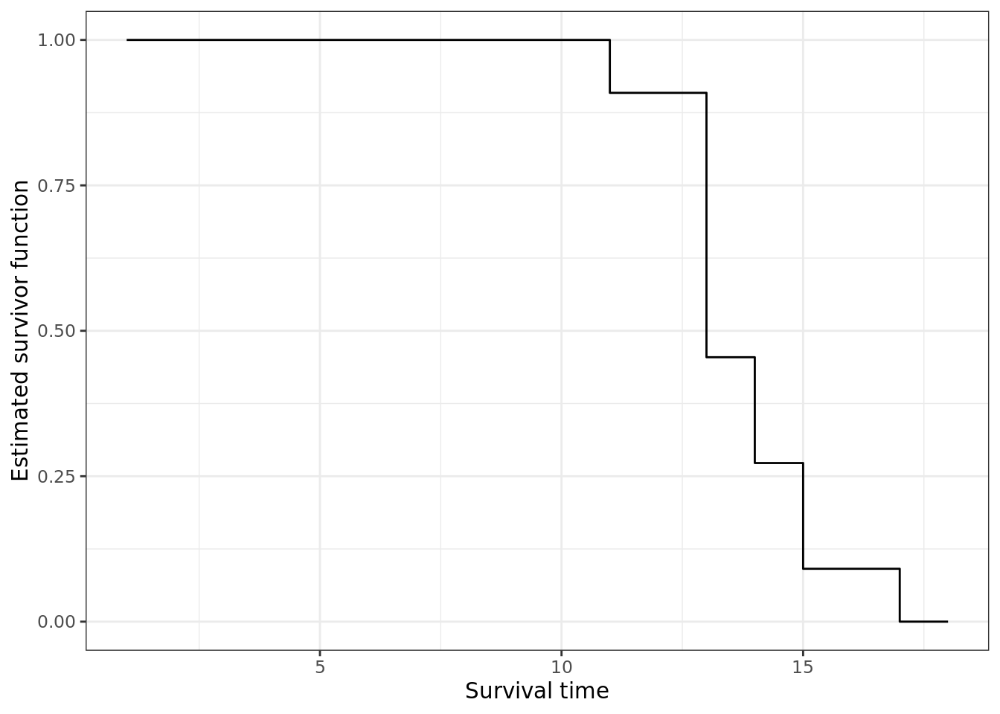

refer to Aalen, Borgan, and Gjessing (2008)
In this section, we shall deem three estimates of survivor function, namely life-table, Kaplan-Meier (KM) and Nelson-Aalen (NA). Before we go into details, let us consider survival function \(S(t)\) that is material to survival analysis. Suppose the duration of study is \((0, \tau)\), for all \(t \le \tau\) we are able to calculate how many patients who still survive, this is, how many patients whose survival time is longer than \(t\), inclusively. This is estimator of survival function at \(t\) shown bellow \[ \widehat{S}(t) = \frac{\text{# of individuals with survival times }\ge t}{\text{# of individuals in the data set}} \tag{1.1} \] we can now deduce empiracal distribution \(\widehat{F}(t) = 1 - \widehat{S}(t)\). There are some assumptions of survivor function:
Let us consider the following data set

This method cannot be used if there exists censors since the information of censors are not capable of being included. Another method used with the presence of censors will now be described below.
Aalen, Odd, Ornulf Borgan, and Hakon Gjessing. 2008. Survival and Event History Analysis: A Process Point of View. Springer Science & Business Media.